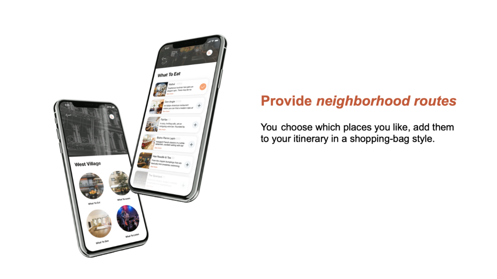
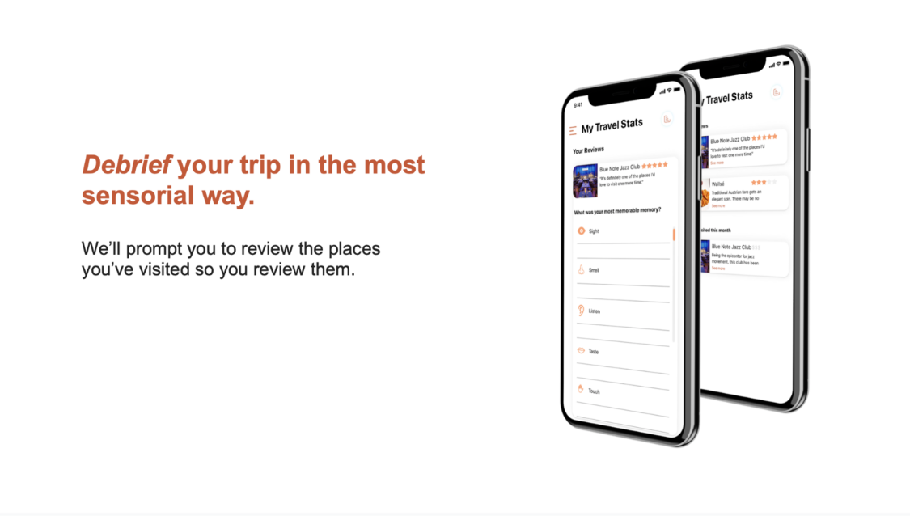
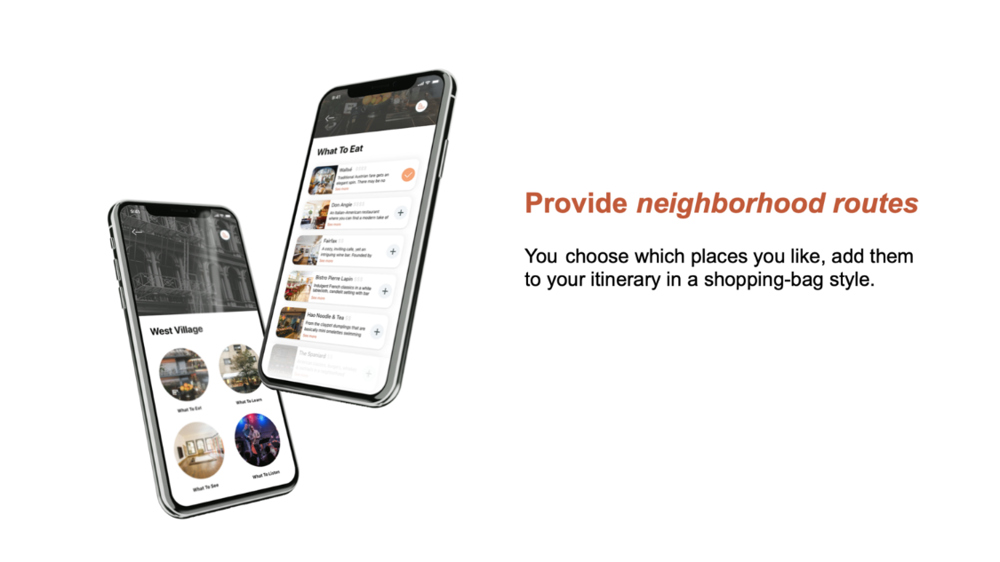
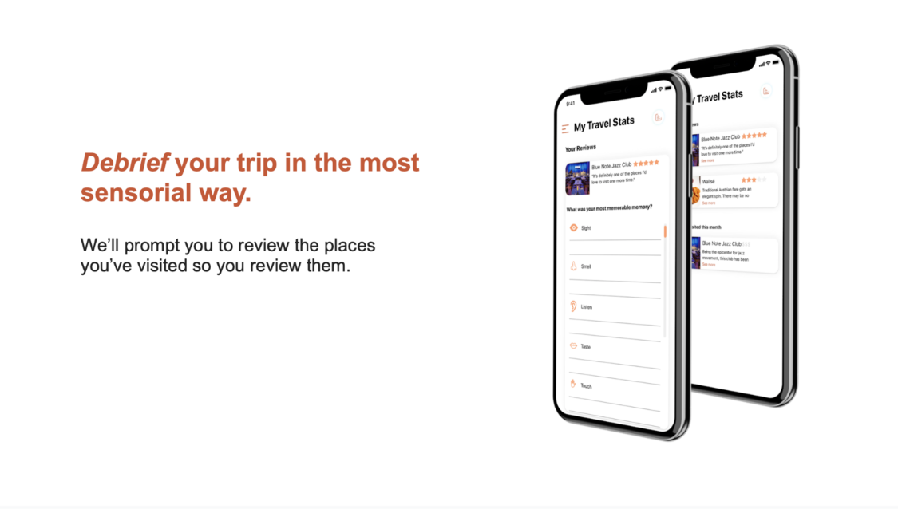

Travel for the Knowledge-Hungry
Capstone Project for Parsons School of Design’s program Strategic Design and Management
In collaboration with: Hansel Huang
Methodologies
Generative Research: in-depth interviews, diary studies, user interviews, literature reviews, storyboarding, affinity mapping, ecosystem mapping Evaluative Research: Usability Tests, Survey Design, Content Evaluation
En route is an app that provides seamless travel plans curated by you for you. We want to be the friend who’s showing you around town when you don’t have that local friend in town. We spare you the pain of planning journey, so you can be en route for your actual big journey. Check out the prototype here: https://invis.io/YZRW8AFVJ2S
 


